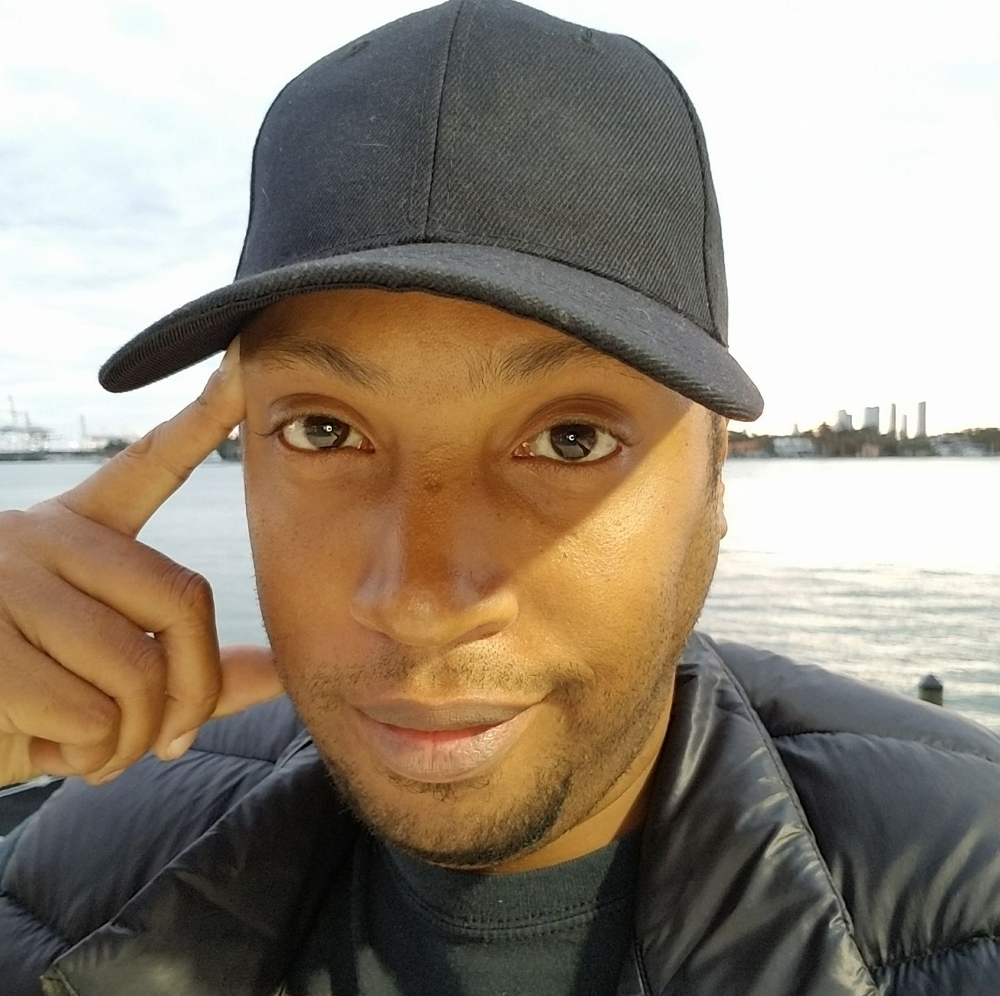
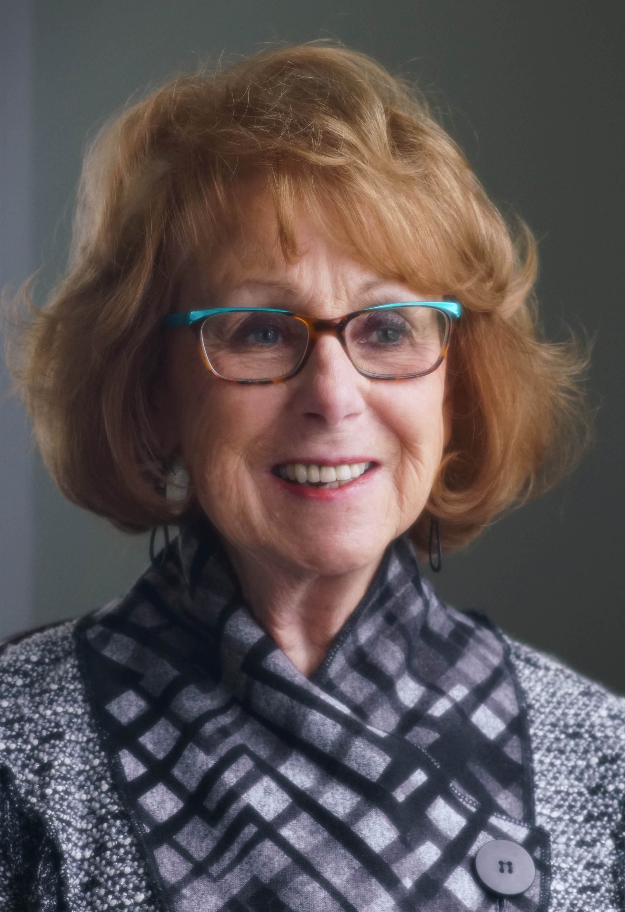
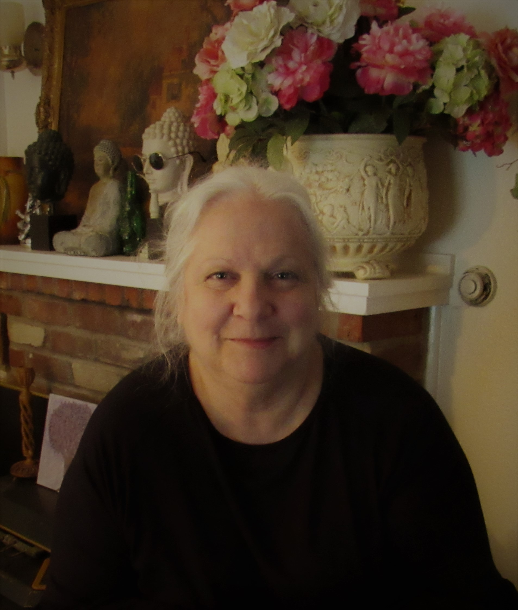
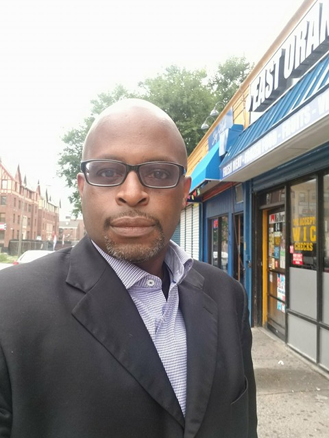
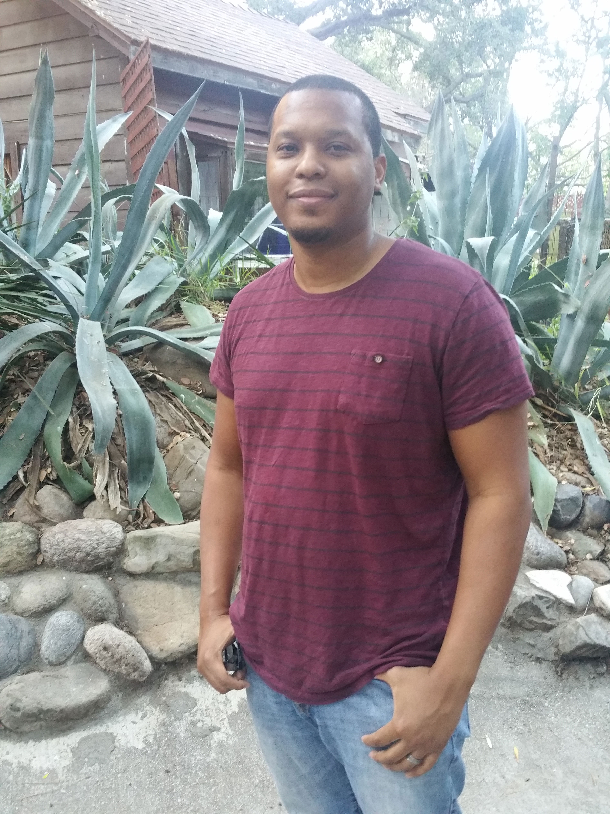

Former Members On Life in the Jehovah's Witnesses and After
By Joy Notoma and Nour Saudi
Besides his recollection of the warm weather, Karama Sadaka says he has no happy memories of growing up in New Orleans. “We didn’t go to parades. We didn’t do Mardi Gras, we didn’t eat king cake...nothing that made the city fun did we do,” he
said.
When Karama’s father, Robert McCoy Sr., was murdered when Karama was five, his mother, Anna Easterling, said Robert would be resurrected from the dead. If Karama followed the rules, he would see the earth transformed into a lush paradise and his
father would be alive. There would be lions, tigers, and panda bears docile enough for Karama and his new baby brother to play with. Best of all, everyone would be immortal and without flaw. For the next 25 years, Karama worked to make sure
he was there to see it happen.
Anna was a Jehovah’s Witnesses, one of the fastest growing restorationist Christian denominations in the world. Witnesses follow a literal interpretation of the Bible that includes a reading of Revelation that says the world will end in the war
of Armageddon. Once the world comes to a violent end, it will be replaced with the paradise Adam and Eve lost in Genesis. Faithful Jehovah’s Witnesses and others resurrected from the dead will live forever in perfection.
Door-to-door ministry takes precedence over higher education as Jehovah’s Witnesses wait for life in a new world, so young people are discouraged from pursuing long-term education plans. As Karama grew up, he ignored his natural academic gifts
and opted out of college.
But after he had married another Witness and had two daughters, his doubts about the religion started to grow. An non JW uncle asked Karama if he would allow his oldest daughter to have a blood transfusion-- forbidden by Jehovah’s Witnesses--
if it were necessary, and Karama couldn’t say no. Soon Karama began an online search. What he found revealed a world of education about the group to which he had devoted his life. His discoveries and eventual disavowal of the religion jeopardized
his most precious relationships.
To outsiders, the words “Jehovah’s Witnesses” may just call to mind an unexpected knock on the door from friendly Bible toters claiming to be neighbors. But their shunning practice, called disfellowshipping, undoes hundreds of former members and
their families every year. The emotional fallout rests in the uncomfortable terrain between grief over a death and the joy of discovering a new existence.
Karama Sadaka
Location: Miami, Fl
Age: 42
Years Out: 12

Read Karama's story
Karama was born in 1975 and by the time he was five, his mother, a recently converted Jehovah’s Witness, was becoming more deeply involved with the organization. The resurrection teaching drew her, especially after mother died and her husband,
Robert McCoy, Sr. was murdered. Karama had gone to the meetings with her before the murder, but when his father was killed, he began to believe that seeing his father again depended on being a good Jehovah’s Witness.
Karama eventually got married to another JW member and had two daughters. But his non-JW uncle would occasionally sprinkle him with questions that dusted his mind with doubt. After doing research online, he confided in his wife that he believed
that they were in a cult. That confidence created a gulf between them. Hurricane Katrina hit a short while later.
Disoriented and traumatized, Karama thought the storm was Armageddon and that he was on the wrong side.
"You have to understand that from that moment, I was fully in." - Karama Sadaka
THE ART OF THE BUBBLE
On December 5, 2017, the Watchtower sign perched in view of the Brooklyn Bridge transformed to crimson against the night sky one last time. The next day, the sign was removed after more than 40 years on the city’s skyline. It was 36 years after
Robert’s McCoy’s murder.
For Anna Easterling and more than 8 million Jehovah’s Witnesses worldwide, the Watchtower sign and the series of buildings it marked was a mecca. They called it Bethel, which means “House of God.”
Donald Trump son-in-law Jared Kushner’s development company brought the Jehovah’s Witnesses’ headquarters with the iconic Watchtower sign for $340 million last year and the Witnesses began moving operations to Warwick, New York. The Watch Tower,
Bible, and Tract Society -- the main incorporated entity of the Jehovah’s Witnesses -- sold another property on the same Brooklyn neighborhood for $18 million, and a third one for $87.5 million. The organization, which has paid millions in settlements
to sexual abuse victims, encourages modest livelihoods for members. Nearly half of Jehovah’s Witnesses in the U.S. live on less than $30,000 a year, according to 2016 Pew Research study. Only nine percent have an undergraduate degree, the lowest
percentage among similar religious groups.
Jehovah’s Witness don’t don a particular style of dress or live in cordoned communities. In the U.S., they are almost equally racially and ethnically mixed among whites, African Americans, and Latinos. But only the hallmark rules of the religion--
no holidays, including birthdays, Christmas, and Easter; no saluting the flag, serving in the military, or accepting blood transfusions-- differentiates them.
Isolation happens in other ways. The governing body of seven men who disseminate rules and develop doctrine, warns members to limit association with non-Witnesses, including family members. And the time commitment required for evangelizing, alongside
that needed for jobs or school, does not leave room for much else.
“Jehovah’s Witnesses have perfected the art of keeping you in a mental bubble. They don’t ask people to live in separate quarters, but they have ways of keeping you isolated anyway,” said Ruben Ortiz,
a former Witness from the Bronx, who left the organization more than a decade ago.
IN THE BEGINNING
In the late 1880s, a first-generation Scottish-Irish haberdasher from outside of Pittsburgh, went through a spiritual crisis. Charles Russell had been a Presbyterian, but he wanted a deeper understanding of scripture and the origins of Christianity.
Russell soon developed a new interpretation of the Bible and wrote a monthly journal that garnered a few hundred followers. The group went by the name Bible Students and distributed their minister’s writings, which had come to include books,
pamphlets, and transcripts of his speeches.
Russell said that Christ returned to rule in heaven in 1874, which would signal the beginning of Armageddon on earth. Armageddon, he said, would come in 1914.
After Russell’s death in 1916, Joseph Rutherford, an eccentric attorney from Missouri, succeeded him as president of the organization. Russell’s prophecy didn’t materialize, so Rutherford made a new one: Armageddon would come in 1975. The former
trial lawyer also built a mansion in San Diego -- named Beth Sarim -- where Old Testament prophets would live when they were resurrected.
But Rutherford’s most significant contribution to the organization created its current identity. At a convention one warm day in early autumn 1922, he proposed a name change. The roaring crowd of Bible Students became known as Jehovah’s Witnesses.
A KNOCK ON THE DOOR
There are approximately 8.3 million Jehovah’s Witnesses worldwide, and they evangelize in 240 locations around the globe.
A person usually gets involved this way:
1. A Jehovah’s Witness gives an elevator pitch, offering one of their publications or a free home Bible study course.
2. The person accepts. The Witness does a follow up visit within the next weeks.
3. A Bible study course ensues. The person begins to attend meetings at a Kingdom Hall, the place of worship.
4. After some time, the person is allowed to do some preaching and is called a “publisher.” The new publisher is expected to put in around three hours weekly.
5. The publisher fulfills the hourly requirements and attends all of the weekly meetings, and then decides to get baptized, making a lifelong commitment to fulfill the tenets of service.
Besides this mode of conversion, about a third of Jehovah’s Witnesses were indoctrinated as children of JW members, known as being “born in.”
"My parents were just in their late teens when someone knocked on their door." - Ruth Anne Whicher
Members are required to attend weekly meetings, to study the Bible and assigned publications, and to evangelize actively among friends, neighbors, and strangers, says David Voas,
a sociologist of religion at the University College London. The weekly time commitment is around 10 hours for the average Jehovah’s Witness.
"A weekly routine, monthly routine, daily routine never varied. My father was an elder in the congregation." - Ruth Anne Whicher
The Witnesses teach that at death, most people will lie in their graves for eternity. Heaven is only for 144,000 people, and there is no hell other than soil and dirt. At a future date -- currently unknown, since the 1975 prediction didn’t pan
out -- God will destroy non-believers and the earth will be restored to the paradise Adam and Eve lost in the book of Genesis.
Waiting for the paradise makes a mirage of life in the everyday world. Witnesses anticipate endless life under a theocracy, so going to college or pursuing a career amounts to a fleeting pursuit, best left to worldly people.
Congregation authority trumps secular authority, even if it sometimes appears misdirected.I think this last sentence doesn’t belong in this graf. When former Witness Ruth Anne Whicher’s childhood friend went missing, Ruth Anne’s father, who was
an elder in the congregation, formed a search squad. Six weeks later, a fellow Jehovah’s Witness was charged with the rape and murder of the missing girl. During the search, Ruth Anne’s older brother got into a serious car accident and required
a blood transfusion. Ruth Anne’s father decided to go against doctrine and allowed his son to receive the transfusion. Instead of grappling with the repercussions of discovering a murderer and rapist in their midst, the congregation disfellowshipped
Ruth Anne’s father.
“I saw a man who was completely devoted to Jehovah looking at an almost lifeless body of his son.” - Ruth Anne Whicher
Ruth Anne Whicher
Location: Nova Scotia, Canada
Age: 68
Years Out: 51

Read Ruth's story
Ruth Anne Whicher’s parents converted when they were newlyweds, and her father quickly became an elder. Ruth Anne’s early life was a symphony of religious activity.
But her family life was transformed when she was a teenager and her father accepted a blood transfusion on behalf of her brother, injured in a car crash. Her father was disfellowshipped and never tried to come back to the organization, while
her mother remained active. Her brother cut ties with the religion.
When her father suddenly died, a Jehovah’s Witness elder refused to deliver the funeral sermon of a disfellowshipped person. Another one of her brothers declined to attend the funeral. “Tell my mother I have lost nothing,” he said when he heard
about his father’s death. Years later, two of Ruth Anne’s young relatives -- a niece and a nephew, both JW members-- committed suicide. The niece left a note that said, “I just wanted to be a normal girl.”
When Ruth Anne’s father was disfellowshipped, it released her, she said. She went to college and got married. She has a daughter with whom she shares a healthy relationship.
CAST OUT
Jehovah’s Witnesses who commit “a serious sin” must confess before a judiciary committee. If they do not express sufficient repentance, then they are disfellowshipped, according to an article published in the August 2015 Watchtower magazine. Serious
sins include watching pornography, engaging in premarital sex, smoking cigarettes, and marital infidelity, but there is no exhaustive list. The judiciary meetings are long processes, where elders frequently ask uncomfortable details about indiscretions,
usually sexual in nature, and use nebulous guidelines to determine punishment.
Officials at the Jehovah’s Witness headquarters in Warwick, New York referred to their website for questions on disfellowshipping. They stated repeatedly that the organization’s official comment is on jw.org.
For twelve years, Helen Travers of Melbourne, Australia annually sent two cards to her mother. That was their only communication. Helen’s mother, who is a 90-year-old Jehovah’s Witness, never responded.
"Those two years and on I always sent her loving cards to let her know that I loved her" - Helen Travers
Despite the anger Helen felt at her mother for cutting off communication, she said the anger she felt at the religious mandate of shunning was greater.
“I can't describe the resentment and anger towards the Watchtower Society for putting its members through that." - Helen Travers
Helen Travers
Location: Melbourne, Australia
Age: 63
Years Out: 37
Read Helen's story
Helen Travers remembers the woman wearing pearls and a tweed suit who came to her family farm. Helen’s mother sat with the woman every week pouring pots of tea while they studied the Jehovah’s Witness Bible. And when Helen was around 10, her
mother asked Helen and her siblings to join the organization.
Helen became devout. She and her sisters were pioneers, the name for Jehovah’s Witnesses who preach full-time. Then she married a man whom she met at work and who claimed he was interested in joining. Their life together became a series of late
nights drinking in nightclubs with Helen dodging his peculiar sexual requests. And when they ran out of money, he came up with an idea to use her body. “Look you’re sitting on a gold mine. You can earn money with sex. You can earn more in
a day than you’d earn in a week,” he said. Helen gave in and began working as a prostitute. Her identity as a Jehovah’s Witness eroded. She attempted suicide three times -- twice by hanging and once by overdose.
In the mid-1980s, after she quit sex work and divorced her husband, Helen met a former Witness through a mutual friend. “In the first 15 minutes of speaking to her, she cleared my head. I think I was ready to find out it wasn’t the truth,” said
Helen.
Helen’s father was never a Jehovah’s Witness. When he died, Helen’s mother shunned her for 12 years.
When Helen was still an active member, she married a man who introduced her to a new lifestyle. He was bad with money and convinced her to work as a prostitute to make ends meet. She was consumed by guilt as her religious life receded into the
terrain of childhood memory.
“The guilt is that strong. The self-hatred.” - Helen Travers
Helen’s father, who wasn’t a witness, was the glue that kept her connected to the family. After he died, Helen made an offhand remark about the doctrine that offended her mother. Weeks later, Helen’s mother mailed a letter that said she would
no longer be in contact.
"She said it was the hardest letter she had to write, but she had no choice." - Helen Travers
AT HOME AND DISFELLOWSHIPPED
When a person who lives with a Jehovah’s Witness family is disfellowshipped, organization principles become invisible lines cast over the home, with each family member treading cautiously among them.
“Even though the relationship isn’t there, you still remain polite. If a loved one dies, for instance, you’d still give your condolences,” said a member from a congregation in the Queens, NY, neighborhood of Far Rockaway, who asked to remain anonymous.
But when she was asked about disfellowshipped people under the same roof as a Jehovah’s Witness family, she tensely took out her phone to find articles on jw.org, the official website of Jehovah’s Witnesses.
“It’s not like there are walls up and you completely shut the person out,” she finally said, when she couldn’t find the answers. Perhaps it was the bitter cold weather- though she was standing in an enclosed subway station- but her eyes looked
like they had filled with tears. Appearing desperate for a way to end the conversation, she quickly excused herself saying she was going on a break.
Debbie Dupuis
Location: Thornton, Colorado
Age: 50
Years Out: 32
Read Debbie's story
Debbie Dupuis was a fourth-generation Witness. Growing up, she had no Witness friends her age and her family moved around a lot. She started befriending “ worldly” people at school.
When her mother refused to let her hang out with a religious Christian girl Debbie had enough. “It was the straw that broke the camel’s back,” she said.
She disassociated from the congregation six months before her 18th birthday. Those six months were some of the hardest. She recalls her father dragging her by her hair to a meeting and not being allowed to eat meals with the family. Finally,
her classmates alerted child protective services, who placed her in temporary foster care until she could live on her own.
Her parents decided to move back to Denver and asked the authorities to let Debbie spend the night with them one last time. They agreed, assuring Debbie they would check on her. Her parents woke her in the middle of the night and took her with
them.
They still shunned her at home. When she started losing weight because of stress and missed meals, her mother took her to a psychologist. Debbie soon realized the psychologist was himself a Jehovah’s Witness.
Once she turned 18, her father told her she “might as well just leave.” From then on, Debbie says, it was survival mode.
She has been shunned by her family for 32 years, but says she is still not over it.
“I like to say I left because I wanted ice cream.” - Debbie Dupuis
When a new friend invited Debbie Depuis to go for ice cream, her mother refused to let her because the invitation was from a non-believer. All the years of having her life micromanaged by the organization crashed into her teenage body and she
snapped.
“Well I’m not one of Jehovah’s Witnesses,” she told her mother before leaving with her friend. Her mother alerted Debbie’s father. When Debbie returned home that evening, a group of congregation elders was waiting. Debbie made it clear that she
didn’t believe the teachings. The family began a long, icy process of shunning.
"My little sister was 11 at the time, and she was really confused and really upset and she snuck in my room to talk to me." - Debbie Dupuis
Debbie wasn’t allowed to eat with family, but she was too proud to relent, despite the shame the arrangement was meant to inflict. She decided to be strategic. She started eating two meals per day: a breakfast that she could take on-the-go and
lunch at school.
“I wasn't allowed to eat with them, I had to eat when they were done." - Debbie Dupuis
“Family is connected even if there is a disconnect. There is a kind of continuing influence, whether the people are there in front of them or not,” said Cheryl Ching,
a family therapist and licensed social worker in Brooklyn, New York.
It’s been 32 years since Debbie was disfellowshipped as a teenager. She has a son whom she raised to be a free thinker who is on his way to college. She says she could use a bit more education to make more money, but she’s otherwise happy. Despite
the accomplishments, her voice, eked out through tears, barely above a whisper, when she spoke of her childhood shunning. “I’m still broken,” she said. “I’m never going to be whole without my family.”
Violeta Dias
Location: Santiago, Chile
Age: 32
Years Out: 13
Read Violeta's story
For Violeta Dias, in Santiago, Chile, where she grew up in the 1990s, was a haven she shared with her parents, her younger brother, and their local congregation of Jehovah’s Witnesses. Religious conviction undergirded life and each day was punctuated
by religious activity. She loved traveling around the country to visit her five aunts who were special pioneers. The only downside of her childhood was being bullied in school. But the bullying was a complex concoction -- bitter for its brutal
alienation, gratifying because it made her even more proud to be a Jehovah’s Witness.
Despite her family’s deep involvement, Violeta ended up going to university full time, a rare privilege for Jehovah’s Witnesses. It was her first time feeling completely accepted by her peers while being proud of her faith. Then she fell in
love with a non-believer and got disfellowshipped while still living at home.
After a few years of sporadic attempts at returning to the organization, Violeta felt her belief system collapse. Her family initially maintained some contact, but two years ago her mother sent a text saying that they could no longer be in touch.
Violeta Dias had a happy childhood as a Jehovah’s Witness. Her parents allowed her to go to college.
"Even the not-so-nice memories have their nice part which was having the support of my family" - Violeta Dias
“I wasn’t one of those Jehovah’s Witnesses whose parents didn’t let them go to college. My parents valued education,” she said from her office in Santiago, Chile, where she works as a research and development engineer.
She remembers a childhood traveling around Chile preaching with her aunts who were special pioneers, as people who spend 130 hours or more evangelizing are called.
During her first year of college, when she still lived in the family home, Violeta sensed a chemistry with a guy that she couldn’t resist. But he wasn’t a Jehovah’s Witness. For Witnesses, dating only happens with vows in mind and always with
a chaperone present. Dating outside of the organization is forbidden.
The first kiss Violeta shared with her college boyfriend was an ugly melange. “It was supposed to be a beautiful experience, but I felt so guilty,” she said. Their entire time dating felt as if she was wrapped tight, maneuvering in a sheath of
self loathing. She hid the relationship from her parents, telling them she was with a Witness friend when she spent nights with him. When another Witness saw Violeta with her boyfriend, he blackmailed her: two months to come clean or he would
do it for her.
"I felt really quilty. I remember the first time I kissed this person, I spent the night crying." - Violeta Dias
She confessed and the congregation judiciary committee decided to disfellowship her. Because she still lived with her parents, the family was in a precarious situation. Relatives who lived in the home could to speak her in small amounts, but other
interactions would be limited.
"I became a piece of furniture or a ghost in my own house." - Violeta Dias
THE CHASM
As Jehovah’s Witnesses in the 1970s, Mona Miller’s family believed Armageddon would come in 1975, another year the organization prophesied for the great war. Her family was constantly on alert. A fire? A car accident? A siren? Could it be Armageddon?
Mona grew up looking for for Biblical war on the horizon.
Mona Miller
Location: Newport, Oregon
Age: 53
Years Out: 28
Read Mona's story
Mona Miller was five years old when a Jehovah’s Witness knocked on her parents’ door. By the next year, in 1970, her mother was baptized. Mona’s dad never joined, but Mona and her three brothers became involved through their mother.
Mona excelled academically, but college was out of the question. She would auxiliary pioneer instead, while working at a grocery store to support her mother after her father died of cancer. The congregation didn’t offer to help support her family,
but still disapproved when she missed meetings because of work. “We have to trust in Jehovah,” they told her.
Elders threatened Mona with disfellowshipping for dating a man who was studying the religion, but who wasn’t yet an official member. They brought her in for a judicial meeting over the relationship in 1989. “But it is not a disfellowshipping offense,”
she repeatedly said. The elders ignored her. It was the last meeting she ever attended.
Her mother wrote to headquarters, who agreed Mona could stay. But for Mona, the damage was already done.
Throughout the years, Mona saw things that she says opened her eyes. When her mother died, her Jehovah’s Witness sister-in-law approached her to claim $67 she had found in Mona’s mother’s purse to pay for gas they had used driving back and forth
from the hospital. Then they left Mona to bury her mother’s body alone.
Though she still doesn’t know if she was ever officially disfellowshipped, she has been shunned by her family and friends all the same.
Mona’s been out for 28 years, and still feels angry. “I’m really resentful because so much of my life was given up for this thing.”
"This is it, we have to be ready, Armageddon's going to come." - Mona Miller
But she constantly wondered why non-believers in her small town in eastern Oregon, who seemed like good people, wouldn’t survive the war.
Her father died of cancer when she was a teenager and she began working at a grocery store to help support her mother. She pioneered at intervals and worked part time, but elders constantly reprimanded her for working on meeting nights. “It became
unbearable,” she said.
Mona’s 20s waned on with no romantic prospects; she had never been on a date before. And then a man in a cowboy hat came to the grocery store where she worked. They flirted. He came back the next day and they flirted some more. They saw each other
for eight months this way, laughing and talking among the aisles of the grocery store. Then one day, he came to Mona’s house and formally asked to be allowed to date her. Mona’s mother couldn’t let her daughter date an unbeliever, but she was
smitten and she knew Mona’s prospects for marriage in their small congregation were bleak. So they came up with an idea: he would study to become a Witness. Mona’s mom would chaperone their dates.
But congregation elders didn’t tolerate the arrangement. They brought Mona in to be reprimanded and threatened to disfellowship her if the relationship continued. An elder also privately threatened her relationship with her mother. Dreading the
shame disfellowshipping would cause her mother, Mona drove to a cliff and contemplated suicide. Mona eventually decided to tell her mother about the incident.
"There was a great big mountain by where we lived, so I drove up the top and I was just going to drive off." - Mona Miller
“I kept thinking if I killed myself, my mother would never forgive me for not talking to her about it first,” said Mona.
"He said you can't live there anymore. And if your mom keeps talking to you, she's going to get disfellowshipped too." - Mona Miller
Mona’s mother wrote a letter to headquarters about Mona’s case. She got a reply saying that Mona had not committed a disfellowshipping offense. But the whole situation had decimated Mona’s faith and she stopped going to meetings. Soon after, her
brother told her he could no longer speak to her.
"He said, 'I know I promised you and I was going to try. I just can't.'" - Mona Miller
Mona’s voice trembles when she speaks about the grief of her family shunning. As she unloads the weight, she speaks nonstop like a spinning top.
Psychologist and coach Marlene Winell coined the phrase religious trauma syndrome to describe the lasting effects of “authoritarianism coupled with toxic theology.” She lists the emotional symptoms of the syndrome as depression, anxiety, anger, grief, loneliness, difficulty
with pleasure, and loss of meaning.
Dan Adams was sitting in his car when he caught sight of his two daughters. It was his first time seeing them in six years. Instead of jumping out of the car from behind the driver’s seat where he was dozing off, he watched them from a distance.
He noted, through the windshield, “how old they now looked.” The occasion was his mother’s funeral. His daughters had emailed him a few days earlier asking that he not try to speak to them.
"Knowing I would never see them again, I was trying to take in as much as I could, trying to remember every little detail." - Dan Adams
Dan Adams
Location: Seattle, Washington
Age: 59
Years Out: 11

Read Dan's story
Dan Adams grew up in Pine Bush, the town just west of Walkill, New York, where one of the two Watchtower Farms is located. Though he grew up surrounded by Jehovah’s Witnesses, Dan didn’t join until he went to his Jehovah’s Witness brother’s
wedding during his first year of college. He was completely “love bombed by the Witnesses,” he said. He converted within six months and dropped out of college.
Dan got married and became an elder. He and his wife had three children and were a model family. But things he saw behind the scenes as an elder bothered him. “What Witnesses are taught from the platform is different from what we saw as elders,”
he said.
There wasn’t one particular instance, though, that led to his leaving after 27 years. The moments were more like a cumulative mass of doubt that grew in the corners of his brain and gradually grew into a decision.
The slow drift toward skepticism strained his marriage. His lack of conviction disgusted his wife. They divorced and Dan moved from San Diego to Seattle. He needed a new start because, even though he wasn’t disfellowshipped, everyone he knew
from the Kingdom Hall shunned him. His family had completely cut him off.
Dan decided to leave the organization after witnessing things that disturbed him when he was an elder, like the congregation not warning families when they had reasonable evidence that a member had sexually abused children.
"I remember his words exactly, he said 'It's up to the parents to watch their own children, it's not our job to police the congregation.'" - Dan Adams
Dan had also started listening to a radio program hosted by magician and supernatural myth buster James Randi. It awakened his skepticism.
“It wasn’t until I allowed myself to ask questions about what I was teaching and what I was learning that I started to see that it didn’t sit right with me,” he said.
The day he saw his daughters from inside his car at his mother’s funeral was his last time at a Kingdom Hall. No one spoke to him while he was in the building. He sat against a wall away from his family listening to the sermon about his mother
being resurrected to a paradise where he, presumably, would not be.
"I got an e-mail from my two daughters saying 'don't try to talk to us at the funeral.' So I went to my mother's funeral at the Kingdom Hall sitting off to the side by myself." - Dan Adams
But when he was driving away, a man who had said a prayer approached his car and thanked him for coming.
"I have grandchildren with names I don't know." - Dan Adams
Lee-Ann Harrhy
Location: Newfoundland and Labrador, Canada
Age: 46
Years Out: 5
Read Lee-Ann's story
Lee-Ann Harrhy made a promise to herself at 6 years old. “If I’m still here when I’m 40, this is bullshit,” she said, referring to the current world which would be wiped away and transformed her to paradise.
Lee-Ann was born in 1971, a third-generation Jehovah’s Witness. When her grandmother died, the family promised Lee-Ann she would see her in just a few years. When 1975 passed, scores of disillusioned worshippers left the religion. Lee-Ann remembers
her father, who wasn’t practicing, teasing her mother about the prophesied year passing.
Though she had doubts, she told herself, “This is the truth. I have to be a good girl and behave myself, because I want to live forever with my mom.”
The first time Lee-Ann was disfellowshipped was after she was date raped. She confessed to the elders about what happened to her and was blamed for being in a situation that led to rape. She went back and was reinstated after a few years because
she missed her mom. When she was 27, her mother, who had been continually abused by her father, committed suicide. Her mother had complained to the elders, but they only told her to go back to her husband. One day she walked into a lake and
drowned herself.
Five years ago, Lee-Ann she left for good. She said she finally “woke up to the truth about the truth,” with the help of a Facebook support group for ex-JWs. She says she still gets “brain wobbles,” little instances of fear that the Jehovah’s
Witnesses might be right.
“I never in a billion years thought there would be a time when I wouldn’t be a Jehovah’s Witness,” she said.
Lee-Ann Harrhy developed a fear of being disfellowshipped when she was 10 years old.
"I said 'Mom you would never do that to me would you?' and she just said 'Well I hope you never leave Jehovah.' So I just knew right away, if I leave this I don't have my mother. " - Lee-Ann Harrhy
Despite recurring doubts, Lee-Ann stayed in the organization because she didn’t want to lose a relationship with her devout mother.
"I used to think 'this is weird, what we do is weird.' But those thoughts scare you." - Lee-Ann Harrhy
Lee-Ann was date raped when she was 18 years old. She felt guilty and told the elders what happened. Instead of getting medical attention, she was publicly reproved, a JW punishment one step below disfellowshipping.
"I had no memories other than I woke up naked with the man having sex with me. I was just flat on my back passed out." - Lee-Ann Harrhy
When Lee-Ann was 27 years old, her mother, still a devoted Jehovah’s Witness, committed suicide.
"My father was abusive and an alcholic. My mom ran away from him half a dozen times, but the only advice she got was 'you're not allowed to divorce your husband.'" - Lee-Ann Harrhy
Disfellowshipping among Jehovah’s Witnesses is a means to maintain a strong sense of membership, according to religious sociologists Rodney Stark and Laurence Iannaccone. They agreed with a commonly held projection that the organization would
grow at 4 percent per year, which was later discredited. But their research on what they call “the success of the organization” is still largely cited among religious studies scholars. They attribute the growth of the organization, in part,
to the practice of disfellowshipping.
Stark and Iannoccone argue that an organization’s strictness increases the value of membership by weeding out “free-loaders,” their term for members who don’t do their share of evangelizing. Disfellowshipping creates a sense of solidarity and members know
that their commitment has value, they say. But it is not only free-loaders who are shunned.
Karen Wilson,
55, from Spokane, Washington, was a pioneer when she was disfellowshipped. Karen’s husband physically abused her. When she went to the elders instead of the police, they told her that she should be a more “submissive” wife.
“A light bulb went off in my head. Why would God have created me, if I was only supposed to be beaten up by my husband?” said Karen.
Karen had also shunned her mother because it was mandated by the organization. “Since I was 17, I have had a parent out of my life due to shunning. First I shunned my mom. Then my dad has shunned me since I left,” she said.
THE GRAY AREA
Shunning happens on a spectrum. The organization may mandate that family members and friends cut off communication, but members sometimes choose to speak to disfellowshipped or disassociated loved ones anyway, a fact that possibly makes it easy
for outsiders to downplay the phenomenon.
But a member’s choice to speak to disfellowshipped or disassociated people is complicated. The organization tells them that doing so undermines the ultimate goal of punishment or that they may be punished for speaking to people who are no longer
members. Sometimes, feeling too conflicted, members suddenly withdraw even after years of contact with a former member.
Chayla Gibson’s parents had spoken to her everyday for years after she stopped attending meetings. After they heard a discourse at last year’s three-day convention at Cow Palace in San Francisco, they visited Chayla and told her that they could
no longer speak.
"I just started yelling 'I can't believe you're doing this.'" - Chayla Gibson
Chayla Gibson
Location: San Francisco, CA
Age: 40
Years Out: 9
Read Chayla's story
Chayla Gibson had an ideal upbringing as a Jehovah’s Witness -- loving parents, camping trips, and plenty of religious activity. She had no doubts. But when she was around 30 years old, she couldn’t ignore certain red flags. “I just couldn’t
understand why we weren’t allowed to research things. If it was “the truth” then why couldn’t I read things and come to that conclusion on my own?” she said.
Then she decided to break away from the religion. When she told her two sons, who were eight and 10 ten years old, about the new direction their life would take, the boys both cried. “I had indoctrinated them so much that they thought that we
were going to die and be destroyed,.” she said. Eventually, even though they were still very close to their grandparents who were Jehovah’s Witness, they came to appreciate their mother’s choice. Her older son started to play basketball on
the school team-- something the organization discourages-- and Chayla went all out for the holidays.
Chayla maintained contact with her parents even after she stopped attending meetings. But after a “new light” that asks families to shun members who have faded as if they were disfellowshipped, her parents decided to cut contact. They also lost
contact with their grandchildren.
Andrea Rota,
a professor in the sociology of religion at The Universities of Bern in Switzerland whose research focuses on Jehovah’s Witnesses, does not like to use the term “controlling” when discussing the influence the organization exerts on members’
lives.
“When you say control, it negates the fact that many Witnesses choose to stay and are quite happy with the sect,” he said. Rota said that there are Jehovah’s Witnesses who practice while maintaining a sense of freedom to do as they choose in the
privacy of their homes, even if their actions violate religious rules.
“I know Jehovah’s Witnesses who are faithful, but they may choose to watch an “R” rated movie at home, but they won’t talk about it with other Witnesses,” Rota said, [equating it to any commitment a person may make without necessarily enjoying
all aspects of the commitment].
A 25-year-old Jehovah’s Witness from South Carolina who chose to remain anonymous agreed. “You just do what you have to do. I don’t think having a tattoo is wrong, but I’d cover it when I go to the [Kingdom] Hall,” she said.
Chayla says that her parents shun her because they feel obligated to.
"They're missing out on such a beautiful thing because of this cult." - Chayla Gibson
Chayla was baptized when she was 11 years old, not because she necessarily wanted to, but because she felt pressured, she said.
"For them to badger you into making a lifelong decision at that young age and then punish you later in life, I think that's criminal." - Chayla Gibson
Chayla’s best friend was disfellowshipped when she was a teenager. Chayla shunned her as a matter of duty. It was “just what you did,” Chayla recalled.
"I can't believe I let these people dictate my life so much." - Chayla Gibson
Steven Hassan,
a mental health counselor who specializes in mind control, coined the term BITE, an acronym to describe the ways organizations control members. BITE stands for behavioral, informational, thought, and emotional control. Julia Gutsell,
a criminology researcher based in Brussels, applied Hassan’s research to Jehovah’s Witnesses in a paper called “A Loving Provision- How Former Jehovah’s Witnesses Experience Shunning Practices.”
The teachings of Jehovah’s Witnesses fit the bill for each mode of control, according to Gutsell. The organization controls behavior by regulating relationships, among other things, she says. Information control starts during recruitment by “withholding
or distorting information about the group,” discouraging members from seeking outside information, and promoting peer-to-peer surveillance. Thought control is accomplished by weaving in the notion that the group possesses the ultimate truth.
Jehovah’s Witnesses commonly call doctrine “the truth.” Finally, emotional control is established by making members think how sinful actions “make Jehovah feel.” Members are made to feel guilt, shame, and fear. Sometimes they are referred to
as “good-for-nothing slaves.”
AFTERSHOCKS
“That religion’s robbed me,” said Matthew Fudge. His tone was defiant, his cadence stamped with notes of disbelief and wry acceptance.
Matthew Fudge
Location: East Orange, NJ
Age: 49
Years Out: 24

Read Matthew's story
The last time Matthew Fudge attended a meeting at a Kingdom Hall, he wore blue jeans, a white t-shirt, and a leather jacket. He was angry. He was disfellowshipped, so he sat in the back.
“I didn’t deserve that. I didn’t deserve to be shunned,” he said.
Matthew, 49, was born into the religion and was baptized when he was 15 years old. His parents were so happy about his decision to get baptized they never told him to think about the gravity of the commitment.
When he got older, he confessed to being intimate with a woman and this led to his being publicly reproved. The second time it happened, he was disfellowshipped, even though he didn’t actually have intercourse. He was 26 years old.
Then, a co-worker who was raised a Jehovah’s Witness began to go to church, which is forbidden to Witnesses. And another co-worker asked him to be in a gospel play that she was directing at another church. But Matthew still lived at home with
his mother and she required him to go to meetings to stay in her home. He started telling her that he was going to another JW congregation when he was actually going to a church. Realizing that she deserved to know, he eventually came clean.
“The relationship with my mother just deteriorated,” he said. He also lost a relationship with his brother, who is still a Witness.
Matthew was raised as a Jehovah’s Witness, but by the time he was in his twenties, he couldn’t quell his curiosity about other denominations. Churches are forbidden parts of “Christendom,” a JW catch-all word for other Christian denominations.
In order to maintain a clear distinction, the Kingdom Hall is never called “church.”
Next to churches in the African American tradition, Kingdom Halls are somber places. Pre-recorded music without percussion plays under as attendees sing in unison. Members stand at their seats to sing and quietly sit when the songs, called kingdom
melodies, are over. No choir sways left to right, lifting voices in harmonies; no one dances in the aisles, catches the holy ghost, or speaks in tongues.
"It's very liberating. You can accept the fact that you can do that, you're not violating the scripture if you shout in church." - Matthew Fudge
Matthew took his questions about church to two women co-workers. One of them told him she was directing a gospel play and asked Matthew to audition. As a child, Matthew would have never imagined that one day he would be in a church, or performing
in a gospel play, no less.
“I was good at it!,” he said, reliving the initial joy almost 20 years later.
A few months after acting in the gospel play, he stopped attending the Kingdom Hall.
“God called me out of it,” he told his Jehovah’s Witness mother, after months of going to a church without telling her.
Their relationship was severed.
"I didn't do this to hurt anybody. I didn't wake up one day and say 'What's the best way to hurt my mom?' I wasn't trying to do that, God called me out of it." - Matthew Fudge
When his mother began to suffer with dementia, Matthew was stricken with the urgency to repair their damaged relationship. One Sunday when Matthew didn’t go to church, he decided to go to the Kingdom Hall to check on his mother. He planned to
find an elder and say, “Can you tell me how my mother’s doing?” He ended up seeing his mother first. She was standing by another woman, close to her age, Matthew recalled. When the woman realized who Matthew was, she stared at him with a look
of contempt so vile that he felt like “filth or gum under a shoe,” while his mother watched. Within moments, his mother began to weep, begging him to return to Jehovah.
"I realized the longer that I stayed there, the worse it was going to get. So I just left." - Matthew Fudge
Their relationship was so damaged that, at her funeral, it was like looking at a stranger, he said.
“I have to keep forgiving and keep forgiving because memories keep coming up,” said Matthew.
"This is what the religion does. It takes." - Matthew Fudge
Leon Cowan
Location: Los Angeles, CA
Age: 38
Years Out: 4

Read Leon's story
Leon Cowan remembers saving seats for his family at the annual three-day convention of Jehovah’s Witnesses at Dodger Stadium in Los Angeles. He and his father would wake up early and place Witness literature over the folded chairs.
To his parents, insulation was an important part of the faith. “The worst JW is still better than the best person on the outside,” his mother frequently said. Leon believed almost immediately.
When he was disfellowshipped the first time, he did everything to get back in. His father was an elder and his mother was a pioneer and he didn’t want to shame them. He was reinstated within a year. The second time he was disfellowshipped, he
decided to take his time.
He didn’t realize it, but his belief in the doctrine had slowly begun to crumble. “I began to believe things like evolution but I would rationalize it and say ‘Maybe they just don’t realize God also uses evolution,” he said.
But when he met his wife, she challenged his beliefs in ways he couldn’t refute. She attended a few meetings and even studied the Bible with a witness to try and learn more about her boyfriend’s faith but, to her, the doctrine didn’t hold up.
After they were married, Leon decided to make a serious effort to return. He figured that he would ask all of the questions that had built up in the 10 years that he had been disfellowshipped, but none of it made sense anymore.
When Leon Cowan met his girlfriend, who is now his wife, she knew he was an excommunicated Jehovah’s Witness who occasionally toyed with the idea of going back. But in the 10-year period that Leon had been disfellowshipped, he began to pick up
on some inconsistencies in the JW doctrine, many of which his wife had pointed out.
"It was really hard for my wife. She saw me going back into something that was potentially dangerous." - Leon Cowan
When Leon’s wife, who chose to remain anonymous, asked him to explain the 1914 teaching, found himself floundering. The organization once taught that the generation alive in 1914 would be around to see Armageddon, but had since changed the definition
of the word “generation.” As Leon spoke, he began to see things that struck him as logical fallacies.
"It felt like I was wearing too many clothes on a hot day, and as I spoke, I took off a layer of clothing." - Leon Cowan
Some former Jehovah’s Witnesses experienced the lapse of their belief system in stages. Others, like Leon, describe one epiphanous moment.
"I started to explain it to her, and all of it crumbled. As I'm trying to explain this doctrine, it all fell apart." - Leon Cowan
Leon initially felt relieved, but then memories of how he treated people when he was a Jehovah’s Witness began to haunt him.
"Jehovah's Witnesses don't really talk about mental illness." - Leon Cowan
RECOVERY
Marlene Winnell’s description of the cultural effect of religious trauma syndrome says that former members frequently feel “fish out of water” feelings, difficulty belonging, or experience information gaps that are out of sync with society.
Hurricane Katrina hit New Orleans in 2005 when Karama Sadaka was 30 years old. Completely disoriented, he feared that he was on the wrong side of the war he been raised to believe would end the world.
He wandered around New Orleans until FEMA relocated him to Nashville. Away from New Orleans and the only religion he had ever known, he saw an opportunity to start fresh.
“There were so many things I had to learn about the world. Sometimes I feel like I’m a baby,” said Karama, on starting his life over after he left the organization.
After a stint in Nashville, he moved to New York City, where he eventually got involved in an ex-Jehovah’s Witness recovery group on Facebook founded by Ruben Ortiz, the former Witness from the Bronx, who has grown the group to over 10,000 members.
Karama remembers the comfort he got from the promise of seeing his father again in paradise, but he’s worked hard to reprogram his thoughts. He still deals with anger and forgiveness, but he’s channeled his emotions into helping free people from
what he calls “the mind control of the Witnesses.”
"The biggest deal for me at that moment was, I'm going to have to let go of the hope that I'm going to see my daddy again." - Karama Sadaka
Some former Jehovah’s Witness return their family’s shunning by not accepting occasional phone calls or by engaging in otherwise cold treatment.
Cheryl Ching, the therapist in Brooklyn, says that her process with each client is based on how the individual defines the relationship. Do they sense a lack? Do they want their family back in their life?
“It’s important to feel that sense of power, that it is possible to have a relationship that’s based on your terms,” Ching said. It’s important too for the person to feel that they’re not always a victim of the group, at the mercy of the damaging
system.
Amneris Cruz
Location: Bronx, NY
Age: 43
Years Out: 9
Read Amneris' story
Amneris Cruz’s family didn’t have a car when she was growing up in Puerto Rico, and the woman who gave them rides was a witness. When Amneris’s mother began to go to meetings with the woman, she was smitten by how kind the members were. But
when Amneris went, something didn’t seem right to her.
“I always thought it didn’t make sense. But I didn’t say anything because I was too shy,” she said.
Around the same time, Amneris’s father began to sexually abuse her. The abuse continued for the next 10 ten years. “I still have to have my door closed to sleep. I still have fears. I had nightmares for years,” Amneris said.
One day, her mother asked if her father ever touched her. Amneris panicked, but she finally told. She found out later that her mother already knew about her father’s pedophilia. He had been arrested and put on trial for abusing other children
when Amneris was a toddler, but had been released.
Amneris thought things would change when her mother found out. Other children in the Kingdom Hall had also told the elders about her father’s abuse. A Jehovah’s Witness rule, however, requires two witnesses to be present for abuse to be verified.
So nothing happened.
Amneris got married and had two children, both of whom were born with developmental disorders. The new family moved to Indiana, along with Amneris’ mother, brothers, and sisters-in-law. Her husband left the family soon after. Despite her fear
of losing family, Amneris couldn’t deny that she no longer wanted to be a Jehovah’s Witness.
For Amneris Cruz, a 44-year-old former Jehovah’s Witness from Puerto Rico, recovery is a line in the sand drawn by her own hand.
"I called her and she treated me so cold. In my mind, I said this is the last time I'm going to reach out." - Amneris Cruz
Cruz was sexually abused by her father, a Jehovah’s Witness, from the time she was six to when she was 16. When it came out that her father had abused 15 other girls, the congregation excused his actions and he was unpunished.
After the family moved to Indiana from Puerto Rico, Amneris continued practicing as a Jehovah’s Witness, but she couldn’t get over the hypocrisy she saw. Amneris also never forgave her mother for not taking action when she found out the sexual
abuse. Even so, Amneris feared losing the relationship she shared with her brothers and their wives. It was the same push and pull that Lee-Ann Lea had felt: the nagging doubts that shoved their way into her dreams and waking life, coupled with
the familiar pull of cordial family relationships. In the end, the doubts won.
Once she stopped practicing, Amneris’ mother and brothers stopping speaking to her. Cruz barely spoke English and she didn’t know anyone in the states.
"I didn't know anybody here in the United States. It was just the Jehovah's Witnesses and my family." - Amneris Cruz
Since Jehovah’s Witnesses do not encourage going to college, Cruz found herself unable to find a job and with no marketable skills. But she was buoyed by an insistent vision; her life would be better and she wouldn’t be like her mother. She eventually
became a certified massage therapist and fell in love with Ruben Ortiz, the founder of the ex-Jehovah’s Witness recovery group who had also helped Karama.
"I'm in control now, and now I know that my happiness is in my hands." - Amneris Cruz
Mercedes Varas
Location: Miami, Fl
Age: 30
Years Out: 10
Read Mercedes' story
Mercedes Varas has vague memories of one Christmas when she was three years old, before her mother became a Jehovah’s Witness. From then on, the religion took up almost all of Mercedes’ childhood and adolescent memories.
Mercedes was an ideal Witness. She was baptized when she was nine, and was even homeschooled so she could become a pioneer at 14 years old.
But Mercedes says she always struggled with her beliefs. “I was seeking a thrill. I don’t know what that thrill was, but I wasn’t finding it by being a Witness,” she said. She started sneaking away at night and secretly visiting online chat
rooms.
At 14, she started dating an older man who ended up harassing and stalking her. After he confessed to her congregation judiciary committee that he had sex with Mercedes and spread intimate details of it all over the Kingdom Hall, she was disfellowshipped.
She lost all her friends and started cutting herself, even considering suicide.
Though she was reinstated after four months, her life at the Kingdom Hall was distressing. When the wife of an elder accused Mercedes of having an abortion, she was forced to see a gynecologist. “I felt like I was being picked and prodded and
pulled apart.” she said.
She says “waking up” happened gradually. She moved out of her mother’s house at 19, but still attended Memorials to please her mother. She entered a Kingdom Hall for the last time when she was 23.
Mercedes Varas, a 30-year-old from Miami, only realized the ways she had been impacted by her upbringing as a Jehovah’s Witness years after she left.
"I just realized I wasn't OK." - Mercedes Varas
Like Debbie Depuis, Mercedes had doubts about the religion that began early, but she didn’t make a break until years later. She was baptized when she nine years old. By the time she was 14, Mercedes started being homeschooled, a choice common
among the parents of young Jehovah’s Witnesses. Her mother imagined that Mercedes was on track to live and work at Bethel, but Mercedes had romantic feelings for another girl in the Kingdom Hall and she began visiting online chat rooms.
“I started to feel like there was a struggle in me. Like there was something more out there,” she said.
She ended up getting involved with a man almost 10 years her senior whom she met online. She tried to end the relationship when she realized “it was toxic and he was controlling.” But then he showed up to her Kingdom Hall pretending to be interested
in joining, a move that earned him points with her mother and congregation elders. Then he became verbally abusive and began stalking her. She had nowhere to turn.
The man told Mercedes that he wanted to officially become a Witness by getting baptized but he needed to confess to the elders that he and Mercedes had slept together.
"Instead of people protecting me, the person who got disfellowshipped was me." - Mercedes Varas
After the confession, Mercedes was disfellowshipped. The shunning put Mercedes on the brink of an emotional collapse. The man began spreading rumors about Mercedes in the Kingdom Hall. Mercedes complained that she was being harassed, but “the
basic attitude was ‘what did I expect? That’s what you get for having sex’, ” she said.
"I started cutting myself. I started toying with the idea of suicide." - Mercedes Varas
After she was reinstated, she moved from her mother’s house and began to distance herself from the organization. But she still felt afraid. For years, she wondered “What if this really is the truth?” Then she started to date a professor who inspired
her to travel and challenged her old beliefs. After beginning therapy, she realized that helping some other former Witnesses would aid her recovery. She decided to form a meetup group for former Jehovah’s Witnesses in Miami.
“The only encouragement there is to think for yourself -- find your own voice,” she said of the group’s philosophy.
THE WAY FORWARD
One chilly fall day in a suburb of Boston, Karen Wilson hosted a workshop for victims of spiritual abuse. Wilson had taped large sheets of easel paper on the walls of the meeting room adjoined to a church where the workshop was held. The sheets
had information on the ways religious groups control members and blank spaces for participants to write in their experiences. Karen recognized the similarities in her own experience -- emotional control, shunning, physical abuse, among other
tell-tale signs.
“Recovery is a process. It happens bit by bit,” she said.
Former Jehovah’s Witnesses have carved out networks like tunnels dug deep in the ground of recovery. The underways are lit with insider jokes, information on current doctrine changes, and encouragement for shunned former members who daily feel
skull-numbing depression. The shared stories of milestones that seem otherwise ordinary are juxtaposed with old visions of Armageddon on the horizon.
This year, one former witness celebrated her mother’s birthday for the first time. Her mother is a 99-year-old Jehovah’s Witness.
Dan Adams says that starting a retirement fund was a landmark moment of his new life. “Just knowing that there’s not some mystical force guiding my life and protecting me. I’m taking care of Dan now,” he said with a tone of simple contentment,
albeit one tinged with grief. Last year, Dan married another ex-Jehovah’s Witness whom he met in an online JW recovery group named Amy.
Debbie Dupuis ended up graduating from college, getting married, and having a son. She is a nurse and has built a life for herself in Thornton, Colorado. Ruth Anne Whicher recently wrote a book about the murder and abduction of her childhood Jehovah’s
Witness friend that indirectly led her to leave the organization. Matthew Fudge, now a member of the Mt. Calvary Missionary Baptist church, lives in New Jersey where he still sings in the choir and attends church every Sunday. After twelve years
of shunning, Helen Travers enjoys a cordial relationship with most of her family members, especially her mother.
Like so many victims of systemic trauma, they had chosen difficult paths -- treacherous, winding, and unpredictable -- to recovery. And somewhere on the way, they chose to speak out.
Bethel
a word JWs use for their headquarters located in Warwick, New York. Bethelites live and work on the facilities, where literature is printed and disseminated, and members of the Governing Body make doctrinal decisions
Armageddon
a Biblical war between good and evil, or God and the devil. The last war before Judgement Day
Jehovah’s Witnesses
a name conceived by second organization president, Joseph Rutherford. A combination of the scripture that calls God YHWH --translated Jehovah-- and a scripture where God declares his people to be “his witnesses.”
The Truth
jargon for the Jehovah’s Witness belief system
The Society
jargon for the Governing Body of seven men who determine the organization’s doctrine and administrative direction
Elder
a male member at the congregation level appointed by the Governing Body to direct a congregation in terms of teaching, discipline, and administrative responsibility
Theocracy
a form of government that recognizes God as the supreme leader. Second president, Rutherford, declared the organization a theocracy to describe the JW system of governance in 1938
Judiciary Committee
a committee, usually of three elders, responsible for member disciplinary action
Pioneer
a member who evangelizes full time. Regular pioneers preach 70 hours per month; auxiliary pioneers preach 30-50 hours per month as they are able; special pioneers preach 130 hours or more
Worldly
jargon for non-believers and things associated with non-believers
Three-Day Convention
an annual convention, based on a theme, known among Witnesses as the district convention. Last year’s convention theme was “Don’t Give Up!”
Fade
when a member gradually distances him/herself from the organization without formally disassociating or being disfellowshipped
Good For Nothing Slave
a phrase from a translation of a parable of Jesus used by JWs to teach humility. A Watchtower article explains that JWs become “Jehovah’s legal property” or slave when they get baptized.
Memorial
an annual ceremony that commemorates the death of Jesus. The most important JW event, also called "The Lord's Evening Meal"